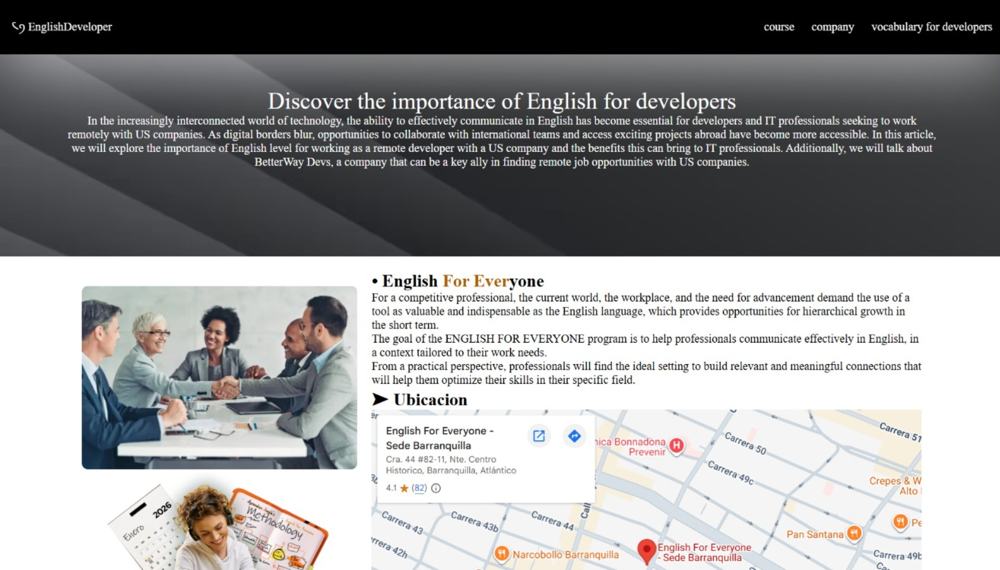
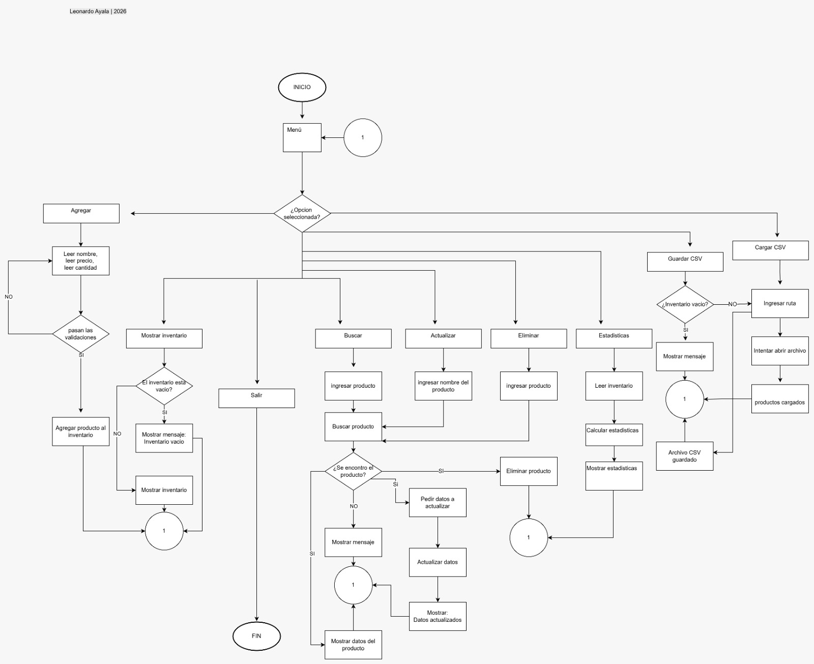

About Me
Soy Ingeniero de Sistemas en formación y Coder en Riwi, enfocado en el desarrollo web y la creación de soluciones funcionales.
Trabajo con tecnologías como HTML, CSS, JavaScript y MySQL, aplicando lógica de programación y resolución de problemas para construir aplicaciones eficientes.
Tengo conocimientos en análisis de requerimientos y manejo de datos con Excel, y actualmente estoy fortaleciendo mis habilidades en Power BI y análisis de datos.
Busco crecer como Software Developer participando en proyectos desafiantes donde pueda aportar valor y seguir mejorando mis habilidades técnicas.
Proyectos

EnglishDeveloper
- HTML
- CSS
- PYTHON
- JAVASCRIP
I developed a personal portfolio website using HTML and CSS. The project showcases my skills, projects, and contact information in a clean and responsive layout. I focused on structure, styling, and user-friendly design to present my work as a software developer.
- Ver Demo
- Detalles
- Codigo

Weekly Inventory
- HTML
- CSS
- PYTHON
- JAVASCRIP
A command-line interface (CLI)-based inventory management system developed in Python as part of a learning process. The system evolves weekly, incorporating new features and improving its structure.
- Ver Demo
- Detalles
- Codigo